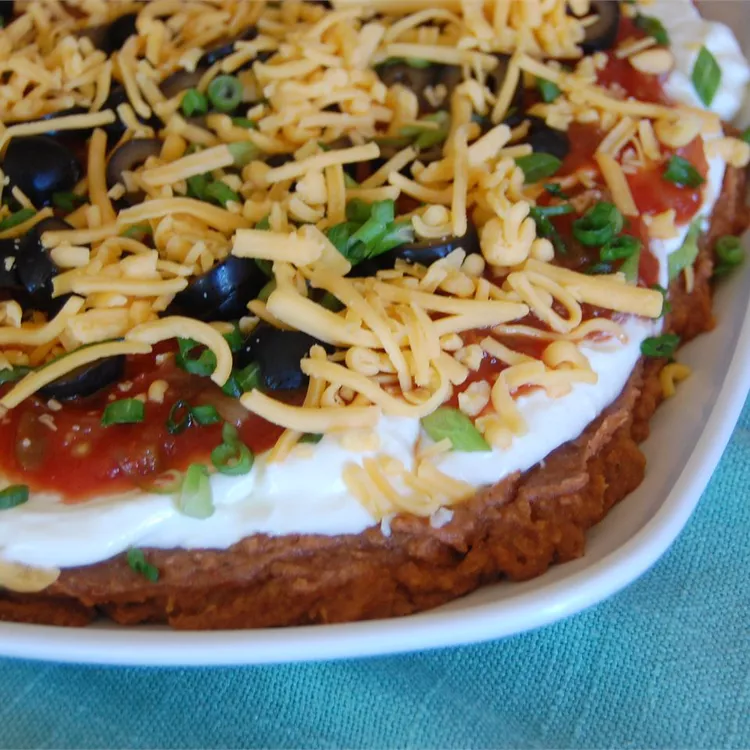

Seven Layer Taco Dip

This taco dip is always a big hit at parties and family get-togethers. People gather around the platter until
it's gone!
ingredients
- 1 (16 ounce) can refried beans
- 1 (1 ounce) package taco seasoning mix
- 1 (16 ounce) container sour cream
- 1 (16 ounce) jar salsa
1 large tomato, chopped
- 1 medium green bell pepper, chopped
- 1 bunch chopped green onions
- 1 small head iceberg lettuce, shredded
- 2 cups shredded Cheddar cheese
- 1 (6 ounce) can sliced black olives, drained
Steps
- Blend refried beans and taco seasoning in a medium bowl; spread mixture onto a large serving platter.
- Mix sour cream and cream cheese in a medium bowl; spread over refried beans.
- Top with salsa. Layer tomato, bell pepper, green onions, and lettuce over top.
- Sprinkle over Cheddar cheese and garnish with black olives.